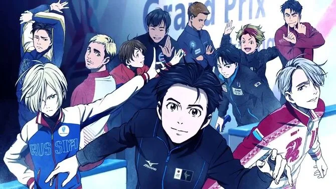
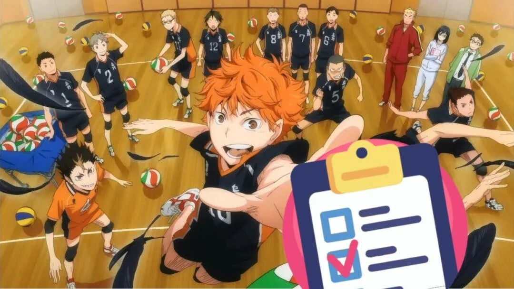
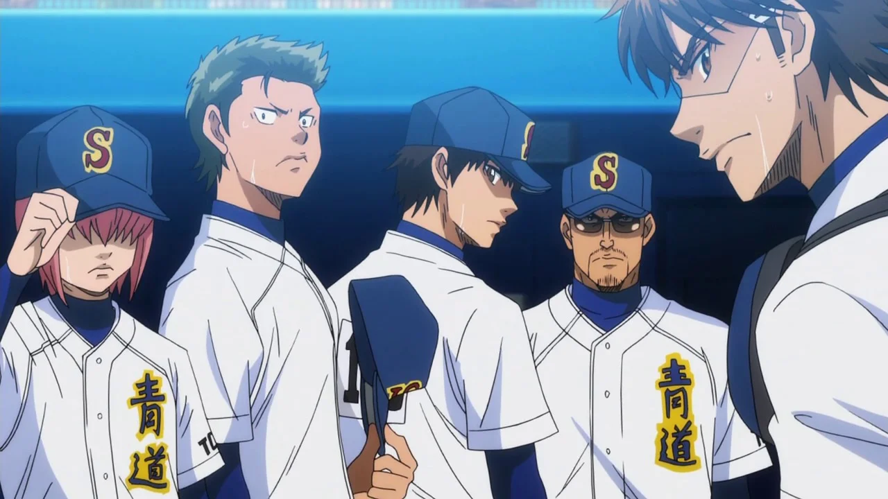

El panorama del manganime se revolucionó en 2016 con el estrenó esta serie de patinadores. En parte fue gracias a su preciosa animación, la cual por desgracia se fue descuidando con el paso de los episodios hasta acabar siendo motivo de mofa dento del fandom. Pero gran parte de su encanto residía en sus personajes y las interacciones entre los mismos, y eso se mantuvo hasta su último episodio. En Yuri!!! On Ice podrás seguir la historia de diferentes patinadores sobre hielo que compiten entre ellos, se conocen, forman lazos y evolucionan.
Aunque a primera vista los partidos de volleyball entre estudiantes de secundaria no parezcan el evento más apasionante sobre el que hacer una serie, Haikyuu es una travesía increíble. Con una animación y una banda sonora exquisita, acompañar a los jugadores del Karasuno es una delicia audiovisual que puede llegar a despertar el interés en el deporte hasta en los más reticentes. Gracias a ello, se han ganado el cariño de multitud de fans creando una gran comunidad a su alrededor.
Quizás otra de las obras menos conocida de la lista, aunque sí muy aclamada por todos aquellos que la han visto. Es un anime de deporte que sigue los pasos del grupo de beisbol de n instituto japonés. Los veremos crecer, mejorar, aprender y evolucionar tanto fuera como dentro del campo, viviendo con ellos sus victorias y fracasos. Se espera que en 2022 se emita la cuarta temporada, mientras que las tres anteriores suman un total de 178 episodios.
